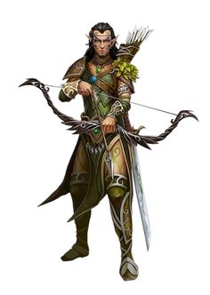

В начале создания персонажа игрок должен выбрать одну из множества фентезийных рас. Каждая раса по своему уникальна и обладает теми или иными особенностями, характеристиками и бонусами, возможностью выбрать множества классов. Выбор той или иной расы влияет на ваш отыгрыш в целом. Стандартом для обычной 5ed редакции Dungeon & Dragons являются 9 фентезийных рас. Но никто вас не останавливает придумать собственную расу, если это не противоречит сэттингу мира или задумкам мастера.
Навигация по расам:
Человек
Дварф
Гном
Полурослик
Полуорк
Эльф
Полуэльф
Тифлинг
Драконорожденный


|

|

|

|

|

|

|
Люди -самая распространённая раса в Забытых Королевствах. Их главное преимущество перед всеми остальными расами это то, что они могут выбрать любой класс и специализацию. В среднем они живут около 70 лет и достигают роста 180 см.
У людей есть только одна специальная возможность: они могут быть любого класса персонажей и подняться до любого уровня в любом классе. Выбор других рас в этих областях ограничен. Также, люди более общительны и терпеливы чем другие расы, со значительно меньшим недовольством, принимают компанию эльфов, дварфов, и остальных. Благодаря этим способностям и склонностям, люди стали значительной силой в мире и часто правят империями, которыми другие расы (из-за их расовых склонностей) управлять затрудняются.
В отличие от дварфов и эльфов, у людей не существует такого понятия, как подраса. Все национальности и расы рода людского, могут без труда скрещиваться между собой, и их дети получат черты одного или обоих родителей. Всякая изолированная группа людей имеет склонность к установлению своих особенностей, но они могут измениться через несколько поколений, под воздействием новых поселенцев или захватчиков.
Многоликие
Со своей склонностью к миграции и завоеваниям, люди более разнообразны физически, чем другие распространенные расы. Не существует типичной внешности человека. Рост отдельного представителя может составлять от 5 до 6 фт. (от 152 до 184 сантиметров), а вес — от 125 до 250 фунтов (от 60 до 112 килограмм). Оттенок кожи у людей варьируется от почти чёрного до очень бледного, а волосы — от чёрного до светлого тонов (волнистые, кудрявые или прямые); мужчины могут носить волосы на лице, густые или редкие. Многие люди имеют примесь нечеловеческой крови, выдающей черты эльфа, орка, или предков другого происхождения. Люди достигают совершеннолетия около двадцати лет, и редко проживают одно столетие.
Разнообразие во всём
Люди являются самыми приспособленным и амбициозным народом среди распространённых рас. Их вкусы, нравы и обычаи сильно отличаются во множестве разных земель, где они поселились. Однако там, где они селятся, они остаются надолго: строят города, стоящие веками, и великие королевства, сохраняющиеся множество столетий. У отдельного человека может быть относительно короткая продолжительность жизни, но человеческая нация и культура сохраняет традиции от своих истоков на время, намного превышающее память одного человека. Они живут сегодняшним днём, что весьма хорошо подходит для приключенческой жизни, и позволяет вдобавок строить планы на будущее, со стремлением оставить после себя прочное наследие. Индивидуально или в группах, люди легко приспосабливаются к ситуации, и всегда остаются внимательными к изменяющейся политической и социальной динамике.
Прочные институты
Там, где один эльф или дварф могут взять ответственность за охрану особого места или великой тайны, человек создаёт священные порядки и институты. В то время как кланы дварфов и старейшины полуросликов передают свои традиции новым поколениям, человеческие храмы, государства, библиотеки и своды законов запечатлевают их традиции в анналах истории. Люди мечтают о бессмертии, но (за исключением тех, кто становится нежитью или достигает божественного восхождения, чтобы избежать оков смерти) достигают его, когда продолжают жить в памяти, после смерти. Хотя некоторые люди могут быть ксенофобами, в целом их общество очень смешано. На землях людей обитает большое количество нечеловеческих рас, по сравнению с количеством людей, живущих на землях нелюдей.
Воплощение амбиций
Люди, ищущие приключений, являются самыми смелыми и амбициозными представителями смелой и амбициозной расы. Они стремятся заработать славу в глазах своих товарищей, накапливая власть, богатство и популярность. Более чем другие народы люди борются за цель, а не за расширение территорий или процветание отдельных фракций.
Человеческие имена и этносы
Поскольку культура людей самая разнообразная среди всех существующих рас, у них нет типичных имён. Некоторые родители дают своим детям имена из других наречий, например, из Дварф- ского или Эльфийского (произносимые более или менее правильно), но большинство родителей даёт имена, связанные с культурой своего региона или традициями предков. Культура быта и физические характеристики людей могут сильно меняться в зависимости от региона. В Забытых Королевствах, например, одежда, архитектура, кухня, музыка, и литература в северо-западных землях Серебряных Пустошей отличаются от тех, что есть в далёком Тёрмише или Импилтуре на востоке, и совсем не похожи на их аналоги в далёком Кара-Туре. Физические характеристики людей различаются в соответствии с переселениями их предков, поэтому люди Серебряных Пустошей имеют все возможные сочетания цветов кожи. В Забытых Королевствах широко известны девять этнических групп, хотя более дюжины других находятся в более локализованных областях Фаэруна. Эти группы и типичные имена их представителей могут быть использованы в качестве примера, вне зависимости от того, из какого мира ваш человек.
Дамарец
Начавшие свою историю на северо-западе Фаэруна, Дамарцы имеют средний рост и сложение, оттенок их кожи варьируется от смуглого до светлого. Их волосы обычно коричневые или чёрные, а цвет глаз сильно отличается, хотя карие — самые распространённые.
Имена дамарцев: (Мужские) Айвор, Бор, Глэр, Григор, Иган, Козеф, Миваль, Орел, Павел, Сергор, Фодель; (женские) Алетра, Зора, Кара, Катернин, Мара, Натали, Ольма, Тана; (фамилии) Берск, Дотск, Куленов, Марск, Немецк, Стараг, Чернин, Шемов
Иллусканец
Иллусканцы — высокий, светлокожий народ с голубыми или серыми со стальным оттенком глазами. У большинства чёрные волосы цвета вороньего крыла, но у тех, кто населяет край северо-запада — светлые, рыжие или светло-русые волосы.
Имена иллусканцев: (Мужские) Блас, Бран, Гет, Ландер, Лют, Малсер, Стор, Таман, Урт, Фрат, Эндер; (женские) Амафрея, Бетха, Вестра, Кетра, Мара, Ольга, Силифрей, Цефрея; (фамилии) Брайтвуд, Виндривер, Лакмэн, Хелдер, Хорнрейвен, Штормвинд
Калишит
Поскольку культура людей самая разнообразная среди всех существующих рас, у них нет типичных имён. Некоторые родители дают своим детям имена Более низкие и стройные, чем большинство других людей, калишиты имеют смугло-коричневую кожу, волосы и глаза. Они обитают в основном на югозападе Фаэруна.
Имена калишитов: (Мужские) Асеир, Бардеид, Зашеир, Кхемед, Мехмен, Судейман, Хасеид; (женские) Атала, Джасмаль, Зашеида, Мейлиль, Сейдиль, Сейпора, Хама, Яшеира; (фамилии) Баша, Джассан, Думеин, Кхалид, Мостана, Пашар, Рейн
Мулан
Преобладающие на восточных и юго-восточных берегах Внутреннего моря, муланы, как правило, высокие, стройные, с кожей цвета янтаря и карими или светло-коричневыми глазами. Волосы у них от чёрного до тёмно-коричневого оттенков, но на землях, где муланы наиболее многочисленны, дворяне и другие жители сбривают все волосы.
Имена муланов: (Мужские) Аот, Барерис, Кетот, Мумед, Рамас, Со-Кехур, Тхазар-Де, Урхур, ЭхпутКи; (женские) Аризима, Золис, Мурити, Нефис, Нулара, Сефрис, Тола, Умара, Чатхи; (фамилии) Анкхалаб, Анскульд, Натандем, Серпет, Уутракт, Фезим, Хахпет
Рашеми
Рашеми, обитающие к востоку от Внутреннего моря и часто смешивающиеся с муланами, обычно низкорослые, коренастые и мускулистые. У них, как правило, тёмная кожа, чёрные глаза, и густые чёрные волосы.
Имена рашеми: (Мужские) Боривик, Владислак, Джандар, Канитар, Мадислак, Ральмевик, Фаургар, Шаумар; (женские) Имзель, Иммит, Наварра, Таммит, Файварра, Хульмарра, Шеварра, Юльдра; (фамилии) Дайрнина, Илтазяра, Мурнитара, Стаянога, Улмокина, Чергоба
Тетирец
Распространившиеся вдоль всего побережья Меча в западной части Фаэруна, тетирцы являются людьми среднего сложения и роста со смуглой кожей, которая светлее у северных поселенцев. Цвет волос и глаз у них сильно различается, но коричневые волосы и голубые глаза — наиболее типичны. Тетирцы в основном используют чондатанские имена.
Тёрами
Рожденные на южных берегах Внутреннего моря, Тёрами, как правило, высокие и мускулистые люди с тёмно-красной кожей, чёрными волнистыми волосами и чёрными глазами.
Имена тёрами: (Мужские) Антон, Диеро, Маркон, Пьерон, Римардо, Ромеро, Салазар, Умберо; женские) Балама, Вонда, Джалана, Дона, Куара, Луиза, Марта, Селизе, Фаила; (фамилии) Агосто, Асторио, Домине, Калабра, Маривальди, Писакар, Рамондо, Фалоне
Чондатанец
Чондатанцы — стройный, смуглый народ с коричневыми, от светлых до почти чёрных, волосами. Они высокие, у них зелёные или карие глаза, но это применимо не ко всем. Чондатанцы преобладают в центральных землях Фаэруна, вокруг Внутреннего моря.
Имена чондатанцев: (Мужские) Горстаг, Грим, Дарвин, Дорн, Маларк, Морн, Рэндал, Стедд, Хельм, Эвендур; (женские) Арвин, Джессаиль, Керри, Лурин, Мири, Рован, Тесселе, Шандри, Эсвель; (фамилии) Бакмэн, Грэйкасл, Дандрэгон, Толстаг, Эвенвуд, Эмблкроун
Шу
Шу — наиболее многочисленная и могущественная раса в Кара-Туре, далеко на востоке Фаэруна. У них желтовато-бронзовый оттенок кожи, с тёмными волосами и чёрными глазами. Фамилии шу обычно стоят перед именами.
Имена шу: (Мужские) Ан, Вэнь, Лонг, Лянь, Менг, Он, Фай, Цзюн, Цзянь, Чен, Чи, Шань, Шуй; (женские) Бай, Ксяо, Лей, Мей, Тай, Цзя, Чао, Шуй; (фамилии) Вань, Као, Кунг, Лао, Линг, Мей, Пинь, Сум, Тань, Хуан, Чиень, Шин
Особенности людей
Сложно делать какие-либо обобщения относительно людей, но ваш персонаж-человек обладает следующими особенностями.
Увеличение характеристик. Значение всех ваших характеристик увеличивается на 1.
Возраст. Люди становятся взрослыми в районе 20 лет, и живут менее столетия.
Мировоззрение. Люди не имеют склонности к определённому мировоззрению. Среди них встречаются как лучшие, так и худшие представители.
Размер. Люди сильно различаются по размерам. Некоторые с трудом достигают 5 фт. (152 сантиметров) ростом, тогда как другие имеют рост, превосходящий 6 фт. (183 сантиметра). Вне зависимости от роста, ваш размер — Средний.
Скорость. Ваша базовая скорость перемещения составляет 30 фт.
Языки. Вы можете говорить, читать и писать на Общем и ещё одном языке на ваш выбор. Люди обычно изучают языки народов, с которыми имеют дело, включая редкие диалекты. Они любят разбавлять собственную речь словами, позаимствованными из других языков: орочьими ругательствами, эльфийскими музыкальными терминами, дварфскими военными командами.


|

|

|

|

|
Дворфы — низкий, коренастый народ, их легко узнать по размеру и осанке. В среднем они от 4 до 4 1/2 футов ростом. У них румяные щёки, тёмные глаза и тёмные волосы. В основном дворфы живут 350 лет. Обычно дворфы угрюмы и неразговорчивы. Они увлекаются тяжёлой работой, их мало заботит юмор. Они сильные и храбрые. Они любят пиво, эль, мёд и более крепкие напитки. Их главная любовь, однако, драгоценный металл, в частности золото. Они ценят самоцветы, особенно алмазы, и непрозрачные камни (кроме жемчужин). Дворфам нравится земля и не нравится море. Они не слишком любят эльфов и испытывают лютую ненависть к оркам и гоблинам. Их низкие коренастые тела не позволяют ездить на лошадях или других крупных ездовых (хотя на пони или кабанах не испытывают трудностей), и они относятся с лёгким подозрением и осторожностью к этим созданиям. Они питают неприязнь к магии и мало способны к ней, но наслаждаются боем, военным искусством и научными ремёслами, такими как инженерное дело.
Невысокие и крепкие
Смелые и выносливые дварфы известны как опытные воины, шахтёры, камнетёсы и металлурги. Хотя они и не превышают 5 фт. (152 сантиметра) в высоту, дварфы настолько широкоплечие и плотные, что весят столько же, сколько превосходящий их в росте на 2 фута (60 сантиметров) человек. Их отвага и выносливость также неуступает представителям более высоких народов. Кожа у дварфов бывает от тёмно-коричневой до светлой, с красным оттенком. Наиболее распространённые оттенки — светло-коричневый или смуглый, как разные виды земли. Их волосы, которые они носят длинными, но собранными в простые причёски, обычно чёрного, серого или коричневого цвета, но у дварфов с бледной кожей часто встречаются рыжие волосы. Дварфы мужчины очень ценят свои бороды и тщательно за ними ухаживают.
Долгая память, долгие обиды
Дварфы могут жить более 400 лет, и старейшие из них часто помнят этот мир сильно отличным от нынешнего. К примеру, некоторые из старейших гномов цитадели Фелбарр (в мире Забытых Королевств) могут припомнить дни, когда более трёх веков назад орки завоевали их крепость и обрекли их на двухсот пятидесятилетние скитания. Такая долговечность даёт им особый взгляд на мир, которого лишены короткоживущие расы вроде людей и полуросликов. Дварфы стойкие и выносливые, как горы, в которые они влюблены. Они стоически противостоят проходящим столетиям и почти не меняются. Они уважают традиции своих кланов, прослеживая их родословную до самого основания древнейших твердынь на рассвете молодого мира, и не отказываются от этих традиций с лёгкостью. Частью этих традиций является преданность богам дварфов, которые поощряют присущие дварфам идеалы: прилежный труд, сноровку в бою и любовь к кузнечному горну. Дварфам присущи непреклонность и лояльность, верность своему слову, решительность в действиях, временами переходящие в упрямство. У многих дварфов сильно развито чувство справедливости, и они медленно прощают причинённое им зло. Зло причинённое одному дварфу, это зло, причинённое всему его клану. Таким образом, попытка отомстить одному дварфу может превратиться во вражду, захлестнувшую целый клан.
Кланы и королевства
Королевства дварфов простираются глубоко под горами, где дварфы добывают драгоценные металлы и камни и куют чудесные вещи. Они любят красоту драгоценных металлов и ювелирных изделий, и у некоторых дварфов эта любовь может превратиться в алчность. Ценности, которые они не могут найти в своих горах, они получают благодаря торговле. Они не любят кораблей, и предприимчивые люди и полурослики часто ведут торговлю дварфскими товарами через водные пути. Благонадёжным представителям этих рас всегда рады в дварфских поселениях, хотя некоторые места там закрыты даже для них.Главным элементом дварфского общества является клан, и дварфы очень высоко ценят социальное положение. Даже дварфы, живущие вдалеке от своих королевств, хранят свою принадлежность к клану, узнают относящихся к нему соплеменников и взывают к именам предков, произнося клятвы и выкрикивая проклятья. Лишение клана это худшая судьба, способная выпасть на участь дварфа.Дварфы в чужих землях обычно работают ремесленниками, чаще всего оружейниками или ювелирами. Некоторые становятся наёмниками или телохранителями, очень ценимыми за их храбрость и преданности.
Боги, золото, клан
Дварф, выбравший путь искателя приключений, может руководствоваться жаждой сокровищ — для личного пользования, для достижения определённой цели или даже ради альтруистического желания помочь другим. Другими может двигать божественное озарение, прямой приказ, или желание принести славу одному из дварфских божеств. Клан и предки тоже являются одними из сильнейших мотивов. Дварф может искать способ вернуть утерянную честь клана, отомстить древнему врагу или вновь обрести место в клане, откуда был изгнан. Или он может отправиться на поиски топора, утерянного предком на поле брани столетия назад.
Имена и этносы
Имя дварфу даётся старейшиной клана согласно традиции. Каждое подходящее имя используется из поколения в поколение. Имя дварфа принадлежит клану, а не отдельному дварфу. Дварф, опорочивший своё имя, лишается его, и согласно законам, ему запрещается использовать любое другое дварфское имя.
Мужские имена: Адрик, Альберих, Баренд, Баэрн, Броттор, Бруенор, Вондал, Вэйт, Гардаин, Даин, Даррак, Делг, Килдрак, Моргран, Орсик, Оскар, Рангрим, Рюрик, Таклинн, Торадин, Тордек, Торин, Травок, Траубон, Ульфгар, Фаргрим, Флинт, Харбек, Эберк, Эйнкиль.
Женские имена: Артин, Бардрин, Вистра, Гуннлода, Гурдис, Дагнал, Диеза, Илде, Катра, Кристид, Лифтраса, Мардред, Одхильд, Рисвин, Саннл, Торбера, Торгга, Фалкрунн, Финеллен, Хельджа, Хлин, Эльдет, Эмбер.
Названия кланов: Балдерк, Боевой Молот, Горунн,Данкил, Железный Кулак, Крепкая Наковальня, Ледяная Борода, Лодерр, Лютгер, Огненная Кузня, Рамнахейм, Стракелн, Торунн, Унгарт, Холдерхек.
Горный дварф
Будучи горным дварфом, вы являетесь сильным и выносливым, приспособленным к жизни в суровой местности. Вы довольно высоки (по дварфской мерке), и скорее светлокожи. Щитовые дварфы из северного Фаэруна, а также правящий клан хиларов и благородный клан деваров из Саги о Копье, всё это горные дварфы.
Увеличение характеристик. Значение вашей Силы увеличивается на 2.
Владение доспехами дварфов. Вы владеете лёгкими и средними доспехами.
Холмовой дварф
Будучи холмовым дварфом вы обладаете обострёнными чувствами, развитой интуицией и замечательной стойкостью. Золотые дварфы Фаэруна, в их могучем южном королевстве являются холмовыми дварфами, также как и изгнанные нейдары и свихнувшиеся клары из Кринна (мир Саги о Копье).
Увеличение характеристик. Значение вашей Мудрости увеличивается на 1.
Дварфская выдержка. Максимальное значение ваших хитов увеличивается на 1, и вы получаете 1 дополнительный хит с каждым новым уровнем.
Особенности дварфов
Ваш персонаж дварф обладает рядом врождённых способностей, являющихся частью его природы.
Увеличение характеристик. Значение вашего Телосложения увеличивается на 2.
Возраст. Дварфы взрослеют с той же скоростью, что и люди, но считаются юными, пока не достигнут пятидесятилетнего возраста. В среднем, они живут свыше 350 лет.
Мировоззрение. Большинство дварфов законопослушные, твёрдо верящие в преимущества хорошо организованного общества. Они также стремятся к добру, обладают развитым чувством справедливости и верят, что все заслуживают пользования преимуществами закона и порядка.
Размер. Рост дварфов находится между 4 и 5 футами (122 и 152 сантиметрами), и весят они около 150 фунтов (68 килограмм). Ваш размер — Средний.
Скорость. Ваша базовая скорость перемещения — 25 фт. Ношение тяжёлых доспехов не снижает вашу скорость.
Тёмное зрение. Привыкнув к жизни под землёй, вы обладаете превосходным зрением в темноте и при тусклом освещении. На расстоянии в 60 фт. вы при тусклом освещении можете видеть так, как будто это яркое освещение, и в темноте так, как будто это тусклое освещение. В темноте вы не можете различать цвета, только оттенки серого.
Дварфская устойчивость. Вы совершаете с преимуществом спасброски от яда, и вы получаете сопротивление к урону ядом.
Дварфская боевая тренировка. Вы владеете боевым топором, ручным топором, лёгким и боевым молотами.
Владение инструментами. Вы владеете ремесленными инструментами на ваш выбор: инструменты кузнеца, пивовара или каменщика.
Знание камня. Если вы совершаете проверку Интеллекта (История), связанную с происхождением работы по камню, вы считаетесь владеющим навыком История, и добавляете к проверке удвоенный бонус мастерства вместо обычного.
Языки. Вы разговариваете, читаете и пишете на Общем и Дварфском языках. Дварфский язык состоит из твёрдых согласных и гортанных звуков, и этот акцент будет присутствовать в любом языке, на котором дварф будет говорить.
Разновидности. Два основных вида дварфов населяют миры D&D: холмовые дварфы и горные дварфы. Выберите один из этих видов.

|

|

|

|

|
Гномы ниже ростом и меньше по сравнению с дворфами, но имеют гораздо большие носы. У большинства гномов кожа имеет бежевый или коричневый окрас, а волосы — белый. Средняя продолжительность жизни — 350 лет. Они особенно устойчивы к магии и имеют предрасположенность к магической школе Иллюзии. Во время битвы гномы получают прибавку, атакуя созданий в величину с человека, а также хорошо уворачиваются от атак ещё больших существ. Гномы очень любят живые вещи и изящно обработанные предметы, в частности самоцветы и драгоценности. Они любят все виды драгоценных камней и являются мастерами в их обработке и полировке. Гномы предпочитают жить в местах пересечённых, скалистых холмов, густо заросших лесом и населённых людьми. Их телосложение сделало их недоверчивыми к большим расам — людям и эльфам, хотя они не враждебно настроены. Они хитры и скрытны с теми, кого не знают или кому не доверяют, и до некоторой степени остаются такими даже в самых лучших обстоятельствах. Живя в шахтах и норах, они благожелательно относятся к дворфам, но считают антипатию своих родственников к обитателям поверхности глупой.
Задорный вид
Гномы очень энергичны, и кажется, что каждый сантиметр их крошечного тела излучает энтузиазм и жизнелюбие. В среднем гномы чуть выше 3 фт. (90 сантиметров), и весят от 40 до 45 фунтов (от 18 до 20 килограмм). Их смуглые или коричневые лица обычно украшены широкими улыбками (над которыми нависают их выдающиеся носы), и их светлые глаза светятся возбуждением. Их русые волосы обычно торчат в разные стороны, словно выражая неослабевающий интерес ко всему на свете. Индивидуальность гномов ярко выражается в их внешности. Гномы мужчины содержат свои бороды, в отличие от растрёпанных волос, аккуратно подстриженными, но часто расчёсывают их на несколько прядей, или придают забавную заострённую форму. Их одежда, обычно спокойных коричневых тонов, изящно украшена вышивкой, тиснением, или расшита драгоценными камнями.
Приверженность восторженности
По мнению гномов, жизнь — замечательная штука, и они готовы до капли осушать такой источник наслаждения в течение трёх-пяти отмеренных им веков. Люди могут задаваться вопросом — как не умереть со скуки за столь длинную жизнь, эльфы долгие годы могут смаковать красоту окружающего их мира, и, похоже, лишь гномов беспокоит, что даже за столь щедро отпущенный срок им не удаётся переделать и пересмотреть всё, что хочется. Разговаривают гномы так, будто их мысли не успевают выбираться из их голов. При этом даже когда они делятся идеями и мнениями на всевозможные темы, им удаётся внимательно выслушивать других, вставляя уместные возгласы удивления, и проявляя уважительные знаки внимания.
Светлые норы
Гномы делают свои дома в холмистых, лесистых землях. Они живут под землёй, но больше любят свежий воздух, чем дварфы, наслаждаясь живой природой поверхности всякий раз, когда могут. Их дома хорошо скрыты с помощью хитроумных устройств и простых иллюзий. Желанные гости быстро оказываются в светлых тёплых норах. Те, кого не ждут, вряд ли смогут эти норы даже отыскать.Гномы, поселившиеся в землях людей, как правило являются огранщиками драгоценных камней, инженерами, мудрецами или жестянщиками. Некоторые человеческие семьи держат гномов преподавателей, чтобы их воспитанники наслаждались сочетанием серьёзного обучения и радостного удовольствия. Гном может обучать несколько поколений одной и той же семьи в течение своей долгой жизни.Хотя гномы любят шутки любого рода, особенно каламбуры и шалости, они также посвящают себя решению более серьёзных задач, которые они ставят перед собой. Многие гномы являются умелыми инженерами, алхимиками, жестянщиками и изобретателями. Они готовы к совершению ошибок и смеются над собой в процессе совершенствования своего дела, принимая смелые (иногда отчаянные) решения, и мечтая о большем.
Исследование мира
Любопытные и импульсивные гномы могут пуститься в приключения, чтобы увидеть мир или из любви к исследованиям. Будучи любителями драгоценных камней и других мелких предметов, некоторые гномы рассматривают приключения как быстрый, хоть и опасный, путь к богатству. Вне зависимости от того, что побудило их к приключениям, гномы, которые приняли этот образ жизни, получают от него столько удовольствия, сколько и от любой другой деятельности, которой они занимаются, иногда к великому неудоволь ствию своих товарищей по приключению.
Всегда благодарные
Редко можно встретить гнома, который был бы враждебным или злым, если он не перенёс тяжёлую травму. Гномы знают, что большинство рас не разделяют их чувство юмора, но они наслаждаются любой компанией, как и всем, что они делают.
Имена и этносы
Гномы любят имена, и большинство из них имеют по полдюжины имён или около того. Мать гнома, отец, старейшина клана, тёти и дяди: каждый даёт гному имя, а также различные прозвища, которые могут на долгое время прилипнуть, а могут и не прилипнуть. Имена гномов, как правило, являются вариациями имен предков или дальних родственников, хотя некоторые из них придумывают абсолютно новые. Когда гномы имеют дело с людьми и другими, кто «зажат» в именах, они используют не более трёх имен: личное имя, название клана и прозвище, выбирая среди них те, которые наиболее забавно звучат.
Мужские имена: Алвин, Алстон, Боддинок, Брок, Бюргел, Варрин, Вренн, Гербо, Гимбл, Глим, Джебеддо, Димбл, Зук, Келлен, Намфудл, Оррин, Рундар, Сибо, Синдри, Фонкин, Фрюг, Элдон, Эрки.
Женские имена: Бимпноттин, Брина, Вейуокет, Донелла, Дувамил, Занна, Карамип, Карлин, Лилли, Лорилла, Лупмоттин, Маднаб, Никс, Нисса, Ода, Орла, Ройвин, Тана, Шамил, Эливик, Элиджобелл, Элла.
Названия кланов: Берен, Гаррик, Даергел, Мёрниг, Накл, Нингел, Раулнор, Тимберс, Турен, Фолькор, Шеппен.
Прозвища: Барсук, Босоног, Двазамок, Колотушка, Ку, Ним, Пеплосерд, Пивохлёб, Плащ, Пок, Самоцвет, Стамблдак, Фниппер.
Лесной гном
Лесные гномы обладают природными способностями к иллюзии, и унаследовали проворство и скрытность. В мирах D&D лесные гномы встречаются редко, и являются скрытным народом. Они собираются в спрятанные в глубинах лесов общины, и используют иллюзию и обман, чтобы укрыться от опасности или скрыть свой побег в случае обнаружения. Лесные гномы обычно дружелюбны с другими добрыми лесными народами, и считают эльфов и добрых фей своими главными союзниками. Эти гномы также дружат с мелкими лесными зверушками, которые предупреждают их об опасности.
Увеличение характеристик. Значение вашей Ловкости увеличивается на 1.
Природная иллюзия. Вы знаете заклинание малая иллюзия. Базовой характеристикой для его использования является Интеллект.
Общение с маленькими зверями. С помощью звуков и жестов вы можете передавать простые понятия Маленьким или ещё меньшим зверям. Лесные гномы любят животных и часто держат белок, барсуков, кроликов, кротов, дятлов и других животных в качестве питомцев.
Скальный гном
Скальные гномы выделяются своей изобретательностью и стойкостью. Большинство гномов в мирах D&D являются скальными, включая гномов-ремесленников из мира Саги о Копье.
Увеличение характеристик. Значение вашего Телосложения увеличивается на 1.
Ремесленные знания. При совершении проверки Интеллекта (История) применительно к магическому, алхимическому или технологическому объекту, вы можете добавить к проверке удвоенный бонус мастерства вместо обычного.
Жестянщик. Вы владеете ремесленными инструментами (инструменты жестянщика). С их помощью вы можете, потратив 1 час времени и материалы на сумму в 10 зм, создать Крошечное механическое устройство (КД 5, 1 хит). Это устройство перестаёт работать через 24 часа (если вы не потратите 1 час на поддержание его работы). Вы можете действием разобрать его; в этом случае вы можете получить обратно использованные материалы. Одновременно вы можете иметь не более трёх таких устройств.
При создании устройства выберите один из следующих вариантов:
Заводная игрушка. Эта заводная игрушка изображает животное, чудовище или существо, вроде лягушки, мыши, птицы, дракона или солдатика. Поставленная на землю, она проходит 5 фт. в случайном направлении за каждый ваш ход, издавая звуки, соответствующие изображаемому существу.
Зажигалка. Это устройство производит миниатюрный огонёк, с помощью которого можно зажечь свечу, факел или костёр. Использование этого устройства требует действия.
Музыкальная шкатулка. При открытии эта шкатулка проигрывает мелодию средней громкости. Шкатулка перестаёт играть если мелодия закончилась или если шкатулку закрыли.
Особенности гномов
Ваш персонаж-гном обладает следующими особенностями, общими для всех гномов.
Увеличение характеристик. Значение вашего Интеллекта увеличивается на 2.
Возраст. Гномы взрослеют с той же скоростью, что и люди, и вероятнее всего к 40 годам переходят к спокойной взрослой жизни. Они способны прожить от 350 до почти 500 лет.
Мировоззрение. Гномы чаще всего добры. Стремящиеся к порядку обычно становятся мудрецами, инженерами, исследователями, учёными или изобретателями. Те, кто больше склонны к хаосу, становятся менестрелями, мошенниками, путешественниками или искусными ювелирами. Гномы добросердечны, и даже мошенники из них получаются скорее шутливые, чем злобные.
Размер. Рост гномов между 3 и 4 футами (91 и 122 сантиметрами), а средний вес составляет 40 фунтов (18 килограмм). Ваш размер — Маленький.
Скорость. Ваша базовая скорость перемещения равна 25 футам.
Тёмное зрение. Привыкнув к жизни под землёй, вы обладаете превосходным зрением в темноте и при тусклом освещении. На расстоянии в 60 фт. вы при тусклом освещении можете видеть так, как будто это яркое освещение, и в темноте так, как будто это тусклое освещение. В темноте вы не можете различать цвета, только оттенки серого.
Гномья хитрость. Вы совершаете с преимуществом спасброски Интеллекта, Мудрости и Харизмы против магии.
Языки. Вы можете говорить, читать и писать на Общем и Гномьем языках. Гномий язык, использующий дварфский алфавит, хорошо известен благодаря техническим трактатам и каталогам знаний об окружающем мире.
Разновидности. В мирах D&D встречаются два вида гномов — скальные и лесные гномы. Выберите один из этих видов.


|

|
Полурослики (хафлинги) умны, способны, изобретательны и преодолевают любые трудности. Они любознательны и умеют демонстрировать мужество, которое не свойственно многим куда большим существам. Они могут быть увлечены богатством, но чаще тратят, чем копят. Полурослики имеют румяную кожу, темные прямые волосы и черные или карие глаза. Обычная продолжительность их жизни — приблизительно 150 лет. Полурослики крепки и трудолюбивы, в основном они тихие и мирные. В целом они предпочитают домашний уют опасностям приключений. Они наслаждаются хорошей жизнью, грубоватым юмором и простецкими историями. На самом деле, иногда они бывают немного скучными. Полурослики ненавязчивы, но внимательны и разговорчивы в дружеской компании. Полурослики смотрят на богатство только как на способ получения жизненных благ, которые они любят. Хотя они не безрассудно храбры и не амбициозны, они в основном честны и усердны, если в этом есть нужда.
Маленькие и практичные
Крошечные полурослики выживают в мире, полном более крупных существ, стараясь избегать внимания, а если это оказывается невозможным, то избегая враждебности. Имея рост около 3 фт. (90 сантиметров), они кажутся относительно безвредными, и благодаря этому успешно существуют столетиями, оставаясь в тени империй,войн и политической борьбы. Они склонны к полноте, и весят от 40 до 45 фунтов (от 18 до 20 килограмм). Кожа у полуросликов встречается от смуглой до бледной, с румянцем. Волосы обычно коричневые или рыже-коричневые, вьющиеся. Глаза полуросликов карие или ореховые. Мужчины часто отпускают длинные бакенбарды, но бороды носят редко, а усы тем более. Они любят носить простую, удобную одежду, предпочитая яркие цвета. Практичность полуросликов распространяется не только на их одежду. Они довольствуются удовлетворением основных потребностей и простых радостей, уделяя совсем мало внимания роскоши. Даже богатейшие из них предпочитают хранить своё добро в закрытых сундуках и подвалах, а не выставлять его на всеобщее обозрение. Полурослики умеют находить простые решения своих проблем, и являются весьма решительными.
Добрые и любопытные
Полурослики — приветливый и дружелюбный народ. Они ценят дружбу и родственные связи так же как собственный дом и очаг, лишь в тайне мечтая о золоте и славе. И даже те из них, кто стали искателями приключений, обычно отправляются в путь, преследуя цели дружбы или общества, тяги к переменам или любопытства. Они любят открывать для себя что-то новое, даже если это совсем простые вещи, вроде экзотической еды или незнакомого стиля одежды. Полурослики легко поддаются жалости, и не выносят вида чужих страданий. Они щедры, и с радостью делятся тем, что имеют, даже в трудные времена.
Единые с толпой
Полурослики легко вливаются в сообщества людей, дварфов или эльфов, где их ценят и всегда им рады. Сочетание их врождённых скрытности и скромности позволяют им легко избегать ненужного внимания. Полурослики охотно работают с другими, и они верны своим друзьям, вне зависимости от их вида. Однако, если кто-то из их друзей, семьи или общины оказывается под угрозой, они способны проявить удивительную свирепость.
Пасторальные удовольствия
Большинство полуросликов живёт в маленьких, мирных общинах с большими фермами, среди ухоженных рощ. Они редко создают собственные королевства, и не держат земель за пределами своих тихих владений. Они обычно не признают среди себя какого-либо рода знати или королевской власти, вместо этого прислушиваясь к семейным старейшинам, руководствуясь их мнением. Семьи сохраняют свой традиционный уклад, несмотря на подъёмы и падения империй. Множество полуросликов живёт среди других рас, где усердная работа и надёжные перспективы принесут им обильное вознаграждение и земные блага. Некоторые общины полуросликов ведут кочевой образ жизни, путешествуя на повозках или плавая на суднах от одного места к другому, не оседая на одном месте постоянно.
Приветливые и положительные
Полурослики стараются поладить с кем угодно, и не склонны выносить поспешные суждения — особенно отрицательные.
Поиск возможностей
Полурослики обычно становятся на путь искателя приключений, чтобы защитить свои общины или поддержать своих друзей или исследовать огромный наполненный чудесами мир. Для них авантюризм в меньшей степени карьера, скорее это возможность, а иногда и необходимость.
Имена и этносы
Полурослику даётся имя, фамилия, и, возможно, прозвище. Фамилии часто являются прозвищами, которые прилипли так сильно, что стали передаваться через поколения.
Мужские имена: Альтон, Андер, Гаррет, Кейд, Коррин, Лайл, Линдал, Майло, Меррик, Осборн, Перрин, Рид, Роско, Уэллби, Финнан, Элдон, Эррих.
Женские имена: Бри, Вани, Верна, Джиллиан, Китри, Кора, Кэлли, Лавиния, Лидда, Мерла, Недда, Паэла, Портия, Серафина, Трим, Шаэна, Эндри, Юфемия.
Фамилии: Вверхтормашкин, Высокохолм, Галькоброс, Добробочка, Зеленофляг, Кустосбор, Лугодуг, Подветкин, Репейник, Чайнолист.
Коренастый
Коренастые полурослики выносливее других и обладают некоторой устойчивостью к ядам. Поговаривают, что в их жилах течёт толика дварфской крови. В мире Забытых Королевств таких полуросликов зовут сильными сердцем, и чаще всего они встречаются на юге.
Увеличение характеристик. Значение вашего Телосложения увеличивается на 1.br>
Устойчивость коренастых. Вы совершаете с преимуществом спасброски от яда, и вы получаете сопротивление к урону ядом.
Легконогий
Легконогие полурослики умеют отлично скрываться, в том числе используя других существ как укрытие. Они приветливы и хорошо ладят с другими. В мире Забытых Королевств легконогие являются самой распространённой ветвью полуросликов. Легконогие более других склонны к перемене мест, и часто селятся по соседству с другими народами, или ведут кочевую жизнь. В мире Серого Ястреба таких полуросликов называют мохноногими или великанчиками.
Увеличение характеристик. Значение вашей Харизмы увеличивается на 1.
Естественная скрытность. Вы можете предпринять попытку скрыться даже если заслонены только существом, превосходящими вас в размере как минимум на одну категорию.
Особенности полуросликов
Как и другие полурослики, ваш персонаж обладает определёнными качествами.
Увеличение характеристик. Значение вашей Ловкости повышается на 2.
Возраст. Полурослики достигают зрелости к 20 годам, и обычно живут до середины своего второго столетия.
Мировоззрение. Большинство полуросликов законно-добрые. Как правило, они добросердечны и любезны, не выносят чужой боли и не терпят притеснения. Также они являются поборниками порядка и традиций, сильно полагаясь на общество и предпочитая проверенные пути.
Размер. Полурослики в среднем примерно 3 фута (90 сантиметров) ростом и весят около 40 фунтов (18 килограмм). Ваш размер — Маленький.
Скорость. Ваша базовая скорость передвижения составляет 25 фт.
Везучий. Если при броске атаки, проверке характеристики или спасброске у вас выпало «1», вы можете перебросить кость, и должны использовать новый результат.
Храбрый. Вы совершаете с преимуществом спасброски от испуга.
Проворство полуросликов. Вы можете проходить сквозь пространство, занятое существами, чей размер больше вашего.
Языки. Вы можете говорить, читать и писать на Общем и языке Полуросликов. Их язык не является секретным, но они не торопятся делиться им с остальными. Пишут они мало, и почти не создали собственной литературы, но устные предания у них очень распространены. Почти все полурослики знают Общий, чтобы общаться с людьми в землях, куда они направляются, или по которым странствуют.
Разновидности. Существует два основных вида полуросликов. Они скорее являются двумя крупными родами, нежели разными видами. Выберите один из них.

|
Полуорки — смешанная раса, производная людей (иногда и других рас) и орков. Некоторые представители этой расы могут быть неотличимы по внешности от людей, в то время как зеленоватая кожа других выдаёт их расовую принадлежность. Средний рост полуорков, как и полуэльфов, 170 см, а средняя продолжительность жизни — 70 лет. Обычно они хорошо видят в темноте, имеют крепкое телосложение и большую силу и очень непривлекательны. Полуорки взрослеют немного быстрее, чем люди. Немногие полуорки живут более 75 лет. Поскольку орки — заклятые враги гномов и эльфов, полуорки могут иметь плохие отношения с представителями этих рас. С этой точки зрения орки не в лучших отношениях с людьми, полуросликами или гномами. Полуорки наследуют приверженность хаосу от своих оркских родителей, но, подобно своим человеческим родителям, они не склонны ни к добру, ни к злу. Полуорки, живущие среди орков, обычно злобные. Полуорки вполне распространены по всему Фаэруну. У них нет территории, которую можно было бы назвать родиной, и в результате большинство их проводит свою жизнь, блуждая по миру в поисках цели.
Крепкие и покрытые шрамами
Серый цвет кожи, плоский лоб, выступающая челюсть, торчащие клыки и могучее телосложение не оставляет сомнений в орочьем происхождении для любого, кто смотрит на полуорка. Рост полуорков между 6 и 7 футами (183 и 213 сантиметрами), а вес обычно колеблется между 180 и 250 фунтов (80 и 113 килограммами). Орки гордятся своими боевыми шрамами, а узоры, составленные из шрамов, украшают их тела. Другие шрамы могут отмечать бывшего раба или изгнанника. Все полуорки, живущие с орками, или поблизости от них, имеют шрамы, следы унижений и поводы для гордости, отмечающие их победы и ранения. Живущие же среди людей полуорки могут как выставлять свои шрамы на обозрение с гордостью, так и со стыдом прятать их.
Метка Груумша
Одноглазый бог Груумш создал орков, и даже теорки, кто отвернулся от поклонения ему, не могут полностью избежать его влияния. То же самое можно сказать и про полуорков, хотя их человеческая кровь и снижает воздействие орочьего наследия. Некоторые полуорки слышат шёпот Груумша в своих снах, взывающий высвободить ярость, что вскипает в них. Другие чувствуют ликование Груумша когда они вступают в бой и либо ликуют вместе с ним, либо трясутся от страха и ненависти. Полуорки по природе своей не являются злыми, но зло скрывается в них, принимают ли они его или сопротивляются ему. В ярости Груумша полуорки чувствуют сильное возбуждение. Ярость не только ускоряет их пульс, она заставляет их тела пылать. Колкие оскорбления действуют на них как яд, и печаль истощает их силы. Но когда они смеются, то делают это громко и от души, и простые физические наслаждения — пиры, выпивка, борьба, барабанный бой и дикие пляски — наполняют их сердца радостью. Они, как правило, вспыльчивы, иногда угрюмы, более склонны к действию, чем к созерцанию и к борьбе, чем к спору. Наиболее культурными полуорками являются те, у кого достаточно самоконтроля, чтобы проживать в цивилизованных землях.
Племена и трущобы
Полуорки наиболее часто живут среди орков. Среди других рас люди наиболее терпимо принимают полуорков, поэтому полуорки, которые не живут среди орков, чаще всего живут среди людей. Заслуживая ли признание среди жестоких варварских племен, или борясь за выживание в трущобах крупных городов, полуорки достигают всего своей физической мощью, выносливостью и решительностью, унаследованной от человеческих предков.
Неприязное отношение
Каждый полуорк находит способ, как добиться признания тех, кто ненавидит орков. Некоторые из них скрытны, и стараются не привлекать к себе никакого внимания. Некоторые из них демонстрируют благочестие и добросердечность настолько публично, насколько это возможно (независимо от того, насколько искренни эти демонстрации). А некоторые просто стараются быть настолько жестокими, что остальные просто избегают их.
Имена
Полуорки обычно имеют имена, соответствующие культуре, в которой они были выращены. Полуорк, который хочет находиться среди людей, может поменять орочье имя на человеческое. Некоторые полуорки с человеческими именами решают принять гортанное орочье имя, потому что считают, что это сделает их более устрашающими.
Мужские имена: Гел, Денч, Имш, Кет, Краск, Муррен, Ронт, Токк, Фенг, Хенк, Холг, Шамп.
Женские имена: Багги, Вола, Волен, Евельда, Кансиф, Мев, Нига, Овак, Оунка, Сута, Шаута, Эмен, Энгонг.
Особенности полуорков
Благодаря орочьему происхождению, ваш персонаж-полуорк обладает следующими особенностями.
Увеличение характеристик. Значение вашей Силы увеличивается на 2, а значение Телосложения увеличивается на 1.
Возраст. Полуорки взрослеют немного быстрее людей, достигая зрелости к 14 годам. Стареют они заметно быстрее, и редко живут дольше 75 лет.
Мировоззрение. Полуорки унаследовали склонность к хаосу от своих орочьих предков, и не особо склонны к добру. Полуорки, выросшие среди орков и желающие прожить с ними всю жизнь, обычно злы.
Размер. Полуорки несколько выше и массивнее людей. Их рост находится в промежутке от 5 до 6 фт. (от 152 до 185 сантиметров). Ваш размер — Средний.
Скорость. Ваша базовая скорость перемещения составляет 30 фт.
Тёмное зрение. Благодаря орочьей крови, вы обладаете превосходным зрением в темноте и при тусклом освещении. На расстоянии в 60 фт. вы при тусклом освещении можете видеть так, как будто это яркое освещение, и в темноте так, как будто это тусклое освещение. В темноте вы не мо- жете различать цвета, только оттенки серого.
Угрожающий вид. Вы владеете навыком Запугивание.
Непоколебимая стойкость. Если ваши хиты опустились до нуля, но вы при этом не убиты, ваши хиты вместо этого опускаются до 1. Вы не можете использовать эту способность снова, пока не завершите длительный отдых.
Свирепые атаки. Если вы совершили критическое попадание рукопашной атакой оружием, вы можете добавить к урону ещё одну кость урона оружия.
Языки. Вы можете говорить, читать и писать на Общем и Орочьем языках. Орочий язык резкий и грубый, полный твёрдых согласных. Он не имеет собственного алфавита и использует дварфский.
|  |
Эльфы в основном немного ниже ростом и стройнее, чем нормальные люди. Черты их лиц изящны и тонки, и они разговаривают в мелодичных тонах. Хотя они кажутся нежными и слабыми, как раса они быстры и сильны. Эльфы живут обычно свыше 1,200 лет, хотя задолго до этого времени они начинают испытывать непреодолимое желание покинуть королевство людей и смертных. Неясно, куда они направляются, но это вечная тяга их расы. Существует пять ветвей эльфийской расы: водные, лунные (серые, как оскорбление), золотые (высокие), лесные (дикие) и тёмные (дроу). Эльф как игровой персонаж всегда считается принадлежащим к самому распространённому виду — к лунным эльфам, хотя игрок может выбрать другой вид с разрешения мастера. На посторонний взгляд разница между группами больше внешняя, но большее число эльфов считает, что между всеми группами есть критически важные различия. Водные эльфы проводят свою жизнь в плаваниях. Золотые эльфы считаются наиболее благородными и серьёзными представителями этого народа. Лунные эльфы самые обычные и похожие на людей. Лесные эльфы считаются дикими, темпераментными и жестокими. Все перечисленные считают, что Тёмные эльфы безнравственны и злы и больше не являются частью эльфийского сообщества.
Стройные и изящные
Обладая неземным изяществом и тонкими чертами, эльфы кажутся людям и представителям других рас чересчур красивыми. В среднем, они немного ниже людей, их рост колеблется от 5 до 6 фт. (от 150 до 185 сантиметров). Они стройнее людей, и весят от 100 до 145 фунтов (от 45 до 65 килограмм). Мужчины и женщины почти одинакового роста, и мужчины весят лишь незначительно больше. Цвета кожи у эльфов включают в себя все человеческие оттенки, а также цвета с медным, бронзовым и голубовато-белым отливом. Волосы помимо человеческих цветов могут быть зелёными или синими, а глаза приобретать цвет жидкого золота или серебра. У эльфов не растут волосы на лице, и почти отсутствуют волосы на теле. Они предпочитают элегантную одежду ярких цветов и простые, но красивые украшения.
Неподвластный времени взгляд
Эльфы способны жить более 700 лет, что даёт им более широкий взгляд на проблемы, беспокоящие короткоживущие расы. События чаще кажутся им забавными, чем волнующими, и ими чаще движет любопытство, чем жадность. В случае мелких происшествий они чаще проявляют равнодушие и остаются в стороне. В случае же преследования цели, выполнения задания или изучения нового навыка эльфы остаются собранными и целеустремлёнными. Они не торопятся заводить друзей или врагов, а прощают ещё медленнее. На мелкие оскорбления они отвечают пренебрежением, на крупные же — местью. Подобно молодым ветвям дерева эльфы проявляют гибкость перед лицом опасности. Они верят в дипломатию и предпочитают с помощью компромисса уладить разногласие прежде чем оно перешло в насилие. Они способны отступить перед лицом вторжения вглубь своих лесов, уверенные, что просто смогут подождать, пока захватчики уйдут. Но если придёт нужда, эльфы способны проявить свою воинскую сторону, продемонстрировав владение мечом, луком и стратегией.
Скрытые лесные королевства
Большинство эльфов живёт в маленьких лесных деревнях, спрятанных среди деревьев. Эльфы охотятся на дичь, собирают пищу и растят овощи. Их навыки и магия позволяют им прокормить себя без вырубки леса и вспахивания земли. Они талантливы в ремёслах, изготавливают качественную одежду и предметы искусства. Их контакты с другими народами обычно ограничены, но некоторые эльфы всё же преуспели в торговле, выменивая свои товары на металлы, которые эльфы не любят добывать сами. Эльфы, встречающиеся за пределами родных земель, чаще всего оказываются путешествующими менестрелями, артистами или мудрецами. Людские дворяне соревнуются за услуги эльфанаставника, способного обучить их детей фехтованию или магии.
Иследования и приключения
Эльфы берутся за приключения из страсти к путешествиям. Благодаря большому сроку жизни, они могут посвятить столетия изучению и исследованию. Им не нравится темп человеческого общества, упорядоченный изо дня в день, но полностью меняющийся за десятилетие, и они предпочитают найти себе занятие, позволяющее им часто путешествовать, устанавливая свой собственный темп жизни. Эльфам также нравится оттачивать своё воинское мастерство, или добиваться великой волшебной мощи, и приключения способствуют этому. Некоторые могут присоединиться к повстанцам, борющимся против угнетателей, а другие становятся борцами за моральные ценности.
Высокомерные, но любезные
Хотя эльфы могут быть высокомерными, они обычно любезны даже с теми, кто не оправдал их высоких ожиданий. Как правило, это все не-эльфы. Но всё же, они способны найти что-то хорошее почти в каждом.
Поиск возможностей
Полурослики обычно становятся на путь искателя приключений, чтобы защитить свои общины или поддержать своих друзей или исследовать огромный наполненный чудесами мир. Для них авантюризм в меньшей степени карьера, скорее это возможность, а иногда и необходимость.
Имена и этносы
Эльфы считаются детьми, пока они не объявят себя взрослыми, где-то вскоре после сотого дня рождения. До этого времени их называют детским именем.
Достигая зрелости, эльф выбирает себе новое, взрослое имя, хотя те, кто знал его под детским именем, могут продолжать пользоваться им. Имя каждого взрослого эльфа уникально, хотя может отражать имена уважаемых личностей или членов семьи. Мужские и женские имена различаются лишь незначительно, и чёткой границы тут нет. Также каждый эльф носит фамилию, обычно это сочетание нескольких эльфийских слов. Некоторые эльфы, путешествующие среди людей, переводят фамилию на Общий, другие сохраняют эльфийскую версию.
Детские имена: Ара, Брин, Валь, Дель, Иннил, Лаэль, Мелла, Наиль, Наэрис, Раэль, Ринн, Сай, Силлин, Тиа, Фанн, Фаэн, Эрин.
Мужские взрослые имена: Адран, Арамиль, Араннис, Ауст, Аэлар, Бейро, Берриан, Варис, Галинндан, Ивеллиос, Иммераль, Каррик, Куарион, Лаусиан, Миндартис, Паэлиас, Перен, Риардон, Ролен, Совелисс, Тамиорн, Таривол, Терен, Хадарай, Химо, Хэйян, Эниалис, Эрдан, Эреван.
Женские взрослые имена Адрие, Альтеа, Анастрианна, Андрасте, Антинуа, Бетринна, Бирель, Вадания, Валанте, Джеленетт, Друсилиа, Йелениа, Каэлинн, Квеленна, Квиласи, Кейлет, Ксанафия, Лешанна, Лиа, Миали, Мэриэль, Найвара, Сариэль, Силакви, Теирастра, Тиа, Фелосиаль, Шава, Шанайра, Энна.
Фамилии (перевод на Общий): Амакиир (Сверкающий Цветок), Амастасия (Звёздный Цветок), Галанодель (Лунный Шёпот), Ильфелкиир (Сверкающий Бутон), Ксилосент (Золотой Лепесток), Лиадон (Серебряный Лист), Найло (Ночной Бриз), Сианодель (Лунный Ручей), Холимион (Алмазная Роса).
Высший эльф
Поскольку вы — высший эльф, у вас острый ум и вызнакомы, по крайней мере, с основами магии. Во многих мирах D&D существует два вида высших эльфов. Один вид (который включает серых эльфов и эльфов долин Серого Ястреба, сильванести Саги о Копье и солнечных эльфов Забытых Королевств) высокомерен и замкнут, считая себя выше не-эльфов и даже других эльфов. Другой вид (включающий высших эльфов Серого Ястреба, квалинести из Саги о Копье и лунных эльфов из Забытых Королевств) более распространён и дружелюбен, и часто встречается среди людей и других рас.
У солнечных эльфов Фаэруна (также называемых золотыми эльфами или эльфами восхода) бронзовая кожа и волосы медного, чёрного или золотистого оттенка. У них золотые, серебристые или чёрные глаза. Лунные эльфы (также называемые серебряными или серыми эльфами) гораздо бледнее, с алебастровой кожей, имеющей иногда оттенок синего. У них часто серебристо-белые, чёрные или синие волосы, но и различные оттенки светлых, коричневых и рыжих тонов также не являются редкими. У них синие или зелёные глаза с золотыми вкраплениями.
Увеличение характеристик. Значение вашего Интеллекта увеличивается на 1.
Владение эльфийским оружием. Вы владеете длинным мечом, коротким мечом, коротким и длинным луками.
Заговор. Вы знаете один заговор из списка заклинаний волшебника. Базовой характеристикой для его использования является Интеллект.
Дополнительный язык. Вы можете говорить, читать и писать на ещё одном языке, на ваш выбор.
Лесной эльф
Поскольку вы — лесной эльф, у вас обострённые чувства и интуиция, и ваши стремительные ноги несут вас быстро и незаметно через ваши родные леса. Эта категория включает диких эльфов Серого Ястреба и кагонести из Саги о Копье, а также расы, называемые лесными эльфами Серого Ястреба и Забытых Королевств. В Фаэруне лесные эльфы (также называемые дикими или зелёными) являются затворниками, не доверяющими не-эльфам.
Кожа лесных эльфов, как правило, имеет медный оттенок, иногда со следами зелёного. У них часто коричневые и чёрные волосы, но иногда они бывают светлого или бронзового оттенков. У них зелёные, карие или орехового цвета глаза.
Увеличение характеристик. Значение вашей Мудрости увеличивается на 1.
Владение эльфийским оружием. Вы владеете длинным мечом, коротким мечом, коротким и длинным луками.
Быстрые ноги. Ваша базовая скорость переме щения увеличивается до 35 фт.
Маскировка в дикой местности. Вы можете предпринять попытку спрятаться, даже если вы слабо заслонены листвой, сильным дождём, снегопадом, туманом или другими природными явлениями.
Дроу
Произошедшие от более древней подрасы темнокожих эльфов, дроу были изгнаны с земной поверхности мира, и обречены поклоняться богине Лолс и следовать пути зла и упадка. Теперь они построили свою цивилизацию в глубинах Подземья, устроенную согласно Пути Лолс. Также называемые тёмными эльфами, дроу имеют чёрную кожу, которая напоминает полированный обсидиан и совершенно белые или очень светлые волосы. У них обычно бледные глаза (настолько бледные, что могут показаться белыми) с сиреневым, серебряным, розовым, красным или синим оттенком. Они, как правило, меньше и стройнее, чем большинство эльфов.
Искатели приключений дроу редки, и их раса существует не во всех мирах. Спросите вашего Мастера, можете ли вы играть персонажем дроу.
Увеличение характеристик. Значение вашей Харизмы увеличивается на 1.
Превосходное тёмное зрение. Ваше тёмное зрение имеет радиус 120 фт.
Чувствительность к солнцу. Вы совершаете с помехой броски атаки и проверки Мудрости (Внимательность), основанные на зрении, если вы, цель вашей атаки или изучаемый предмет расположены на прямом солнечном свете.
Магия дроу. Вы знаете заклинание пляшущие огоньки. Когда вы достигаете 3 уровня, вы можете один раз в день использовать заклинание огонь фей. При достижении 5 уровня вы также сможете раз в день использовать заклинание тьма. «Раз в день» означает, что вы должны окончить продолжительный отдых, прежде чем сможете наложить это заклинание ещё раз посредством данного умения. Базовой характеристикой для их использования является Харизма.
Владение оружием дроу. Вы владеете рапирой, коротким мечом и ручным арбалетом.
Тьма Дроу
Если бы не одно знаменитое исключение, раса дроу моглабы быть повсеместно презираема. Для большинства это раса демонопоклонников, обитающих в глубинах Подземья, появляющихся только в самые тёмные ночи, чтобы грабить и убивать обитателей поверхности, которых они ненавидят. Их общество развращено и обращено к Лолс, их богине-паучихе, которая поощряет убийство и истребление целых семей борющихся за власть.
Тем не менее, как минимум один дроу смог сломать стереотип. В мире Забытых Королевств Дриззт До’Урден, следопыт Севера, проявил себя как добродетельный защитник слабых и невинных. Отвергая своё наследие, и существуя в мире, взирающем на него с ужасом и отвращением, Дриззт стал образцом для тех немногих дроу, кто следует по его стопам, пытаясь найти жизнь вне злого общества их дома — Подземья.
Дроу растут в уверенности, что живущие на поверхности расы хуже их, и ни на что не годятся, кроме как стать рабами. Дроу, у которых пробуждается совесть, или тем, кто считает необходимым сотрудничать с представителями других рас, бывает трудно преодолеть предрассудки, особенно, когда они сами так часто являются объектом ненависти.
Особенности эльфов
Ваш персонаж эльф обладает рядом разнообразных качеств, отражающих тысячелетия эльфийского совершенствования.
Увеличение характеристик. Значение вашей Ловкости увеличивается на 2.
Возраст. Несмотря на то, что физически эльфы взрослеют в том же возрасте, что и люди, их понимание о взрослении выходит за рамки физического развития, и располагается в сфере житейского опыта. Обычно эльф получает статус взрослого и взрослое имя в возрасте 100 лет, и может прожить до 750 лет.
Мировоззрение. Эльфы любят свободу, разнообразие и самовыражение. Таким образом, они относятся к добрым аспектам хаоса. Они ценят защиту чужой свободы так же как и своей, и чаще они скорее добры, чем нет. Исключением из этого правила являются дроу. Их изгнание в Подземье сделало их злобными и опасными. Дроу чаще являются злыми.
Размер. Рост эльфов колеблется между 5 и 6 футами (152 и 183 сантиметрами), у них стройное телосложение. Ваш размер — Средний.
Скорость. Ваша базовая скорость перемещения — 30 фт.
Тёмное зрение. Привыкнув к сумраку леса и ночному небу, вы обладаете превосходным зрением в темноте и при тусклом освещении. На расстоянии в 60 фт. вы при тусклом освещении можете видеть так, как будто это яркое освещение, и в темноте так, как будто это тусклое освещение. В темноте вы не можете различать цвета, только оттенки серого.
Обострённые чувства. Вы владеете навыком Внимательность.
Наследие фей. Вы совершаете с преимуществом спасброски от очарования, и вас невозможно магически усыпить.
Транс. Эльфы не спят. Вместо этого они погружаются в глубокую медитацию, находясь в полубессознательном состоянии до 4 часов в сутки (обычно такую медитацию называют трансом). Во время этой медитации вы можете грезить о разных вещах. Некоторые из этих грёз являются ментальными упражнениями, выработанными за годы тренировок. После такого отдыха вы получаете все преимущества, которые получает человек после 8 часов сна.
Языки. Вы можете говорить, читать и писать на Общем и Эльфийском языках. Эльфийский язык текучий, с утончёнными интонациями и сложной грамматикой. Эльфийская литература богата и разнообразна, а стихи и песни известны среди представителей других рас. Многие барды учат эльфийский язык, чтоб добавить песни в свой репертуар.
Разновидности. Древний раскол среди эльфийских народов привёл к возникновению трёх видов: высших эльфов, лесных эльфов и тёмных эльфов, которых обычно называют дроу. Выберите один из этих видов. В некоторых мирах они делятся ещё сильнее, (например на солнечных и лунных эльфов в мире Забытых Королевств) так что если хотите, можете выбрать более уточнённый вариант.
Полуэльфы — наиболее распространённые представители смешанных рас. Полуэльфы обычно сильно похожи на своего родителя-эльфа. Они — красивый народ, с хорошими чертами каждой своей расы. Они свободно общаются с обеими расами и лишь ненамного выше среднего эльфа (5 футов 6 дюймов в среднем) и весят около 150 фунтов. Обычно они живут около 160 лет. У них нет способностей эльфа и отсутствует приспособляемость, дающая персонажу неограниченный уровень. И, наконец, в некоторых менее цивилизованных нациях на полуэльфов смотрят с подозрением и суеверием. В основном, у полуэльфа есть любознательность, изобретательность и честолюбие его человеческих предков и утончённые чувства, любовь к природе и художественный вкус его эльфийских предков. Полуэльфы не образуют собственного сообщества; скорее, их можно найти живущими в колониях эльфов и людей. Реакция людей и эльфов на полуэльфов варьируется от скрытого восхищения до прямого расизма.
Меж двух миров
Для людей полуэльфы выглядят эльфами, а для эльфов они люди. Их рост примерно посередине между людьми и эльфами, и составляет от 5 до 6 фт. (от 155 до 183 сантиметров). Полуэльфы не такие стройные, как эльфы, но и не такие широкоплечие как люди. Их вес колеблется между 100 и 180 фунтами (45 и 80 килограммами), и мужчины лишь немного превосходят женщин в росте и весе. У мужчин полуэльфов на лицах растут волосы, и некоторые отращивают бороды, чтобы скрыть своё эльфийское происхождение. Цвет волос и кожи у них примерно посередине между их людскими и эльфийскими родителями, и таким образом разнообразие даже выше, чем у исходных рас. Цвет глаз они обычно наследуют у эльфийских родителей.
Дипломаты или странники
Полуэльфы не имеют собственных государств, но их радушно принимают в людских городах, и чуть менее радушно в эльфийских лесах. В крупных городах, в регионах, где люди и эльфы живут рядом, численность полуэльфов иногда возрастает настолько, что они организовывают свои собственные маленькие коммуны. Они рады обществу других полуэльфов, единственных существ, которые по-настоящему понимают, каково это, жить меж двух миров. Впрочем, в большей части мира полуэльфы настолько редки, что могут годами не встречаться друг с другом. Некоторые полуэльфы предпочитают вообще избегать компании, и живут на природе как охотники, лесники или искатели приключений, посещая цивилизованные места лишь изредка. Как и эльфы, благодаря своему долголетию они движимы тягой к перемене мест и нигде не остаются подолгу. Другие же наоборот, бросаются в гущу социальной жизни, используя свою харизму и социальные навыки на поприще дипломата или мошенника.
Превосходные послы
Многие полуэльфы учатся ещё в раннем возрасте преодолевать враждебность и находить со всеми общий язык. Как раса они обладают эльфийской грацией без эльфийской отчуждённости, и человеческой энергичностью без человеческой грубости. Из них часто выходят превосходные послы и посредники (за исключением переговоров между людьми и эльфами, так как каждая сторона подозревает полуэльфа в приверженности другой).
Имена
Полуэльфы используют и человеческие и эльфийские имена. Как бы подчёркивая, что они в действительности не принадлежат ни одному из этих обществ, полуэльфы, выросшие среди людей, получают эльфийские имена, а те, кто вырос среди эльфов, наоборот — берут человеческие.
Особенности полуэльфов
Ваш персонаж-полуэльф обладает некоторыми качествами, обычными для эльфов, и некоторыми, присущими только полуэльфам.
Увеличение характеристик. Значение вашей Харизмы увеличивается на 2, а значения двух других характеристик на ваш выбор увеличиваются на 1.
Возраст. Полуэльфы взрослеют с той же скоростью, что и люди, и достигают зрелости к 20 годам. Они живут гораздо дольше людей, часто пересекая рубеж в 180 лет.
Мировоззрение. Полуэльфы унаследовали склонность к хаосу от своих эльфийских предков. Они одинаково ценят и личную свободу и творческое самовыражение, не проявляя ни тяги к лидерству, ни желания следовать за лидером. Их раздражают правила и чужие требования, и иногда они оказываются ненадёжными и непредсказуемыми.
Размер. Полуэльфы почти такого же размера, как и люди. Их рост колеблется от 5 до 6 фт. (от 155 до 183 сантиметров). Ваш размер — Средний.
Скорость. Базовая скорость вашего перемещения равна 30 футам.
Тёмное зрение. Благодаря вашей эльфийской крови, вы обладаете превосходным зрением в темноте и при тусклом освещении. На расстоянии в 60 фт. вы при тусклом освещении можете видеть так, как будто это яркое освещение, и в темноте так, как будто это тусклое освещение. В темноте вы не можете различать цвета, только оттенки серого.
Наследие фей. Вы совершаете с преимуществом спасброски от очарования, и вас невозможно магически усыпить.
Универсальность навыков. Вы получаете владение двумя навыками на ваш выбор.
Языки. Вы можете говорить, читать и писать на Общем, Эльфийском, и ещё одном языке на ваш выбор.
Тифлинги — отдаленные потомки человека и некого злого планарного существа, типа демона (обычно марилит или суккуба), дьявола (обычно эринайс, гелугон или пит фиенд), ночной ведьмы, ракшаса или даже слуги злого божества (некоторые из этих существ должны использовать магию, чтобы принять форму, которая является совместимой с человеком). Тифлинги выглядят как люди, кроме одной или двух отличительных особенностей, связанные с их необычным предком (например, рожки на голове, клыки или острые зубы, раздвоенный язык, красные или кошачьи глаза, хвосты, необычный цвет волос и кожи, чешуя и т. д.) Тифлинги имеют такую же продолжительность жизни и возрастные категории, как люди. Большинство тифлингов злы, но некоторые сумели преодолеть влияние своей родословной, сделав свой собственный выбор между добром и злом.
Дьявольская родословная
Тифлинги произошли от людей, и по большому счёту всё ещё выглядят как люди. Тем не менее, их дьявольское наследие оставило заметный отпечаток на внешности. У тифлингов есть большие рога, принимающие различные формы: у некоторых витые рога, как у барана, у других длинные и прямые, как у газели, у третьих спиральные, как у антилопы. Их толстый хвост, от 120 до 150 сантиметров длиной, вьётся между ног, похлёстывая их, когда тифлинг нервничает. Острые зубы превращают улыбку в звериный оскал, а их глаза сплошного цвета без намёка на зрачок или белок, обычно чёрного, красного, белого, серебряного или золотого цвета. Цвет кожи тифлингов может принимать все тона, характерные для человека, а также различные оттенки красного. Их волосы, струящиеся из-за рогов, обычно тёмные, от чёрного или коричневого до тёмно-красного, синего или фиолетового.
Самодостаточные и недоверчивые
Тифлинги живут небольшими общинами, в основном в людских городах, чаще всего в самых трущобах, где из них вырастают жулики, воры и короли преступного мира. Иногда они живут группами среди других меньшинств, которые относятся к ним с чуть большим уважением. У тифлингов нет родины, и они знают, что им нужно найти свой путь в жизни, и что им понадобится сила для выживания. Они с опаской относятся ко всем, кто называется их другом, но когда кто-то проявляет доверие по отношению к ним,они стремятся отплатить той же монетой. Для того, кто заслужит верность тифлинга, он станет верным другом и надёжным союзником до конца своей жизни.
Взаимное недоверие
Люди склонны с недоверием относиться к тифлингам, полагая, что их дьявольское наследие выражается не только во внешнем виде, но и в их личных качествах. Владельцы магазинов с особой тщательностью следят за вошедшими к ним тифлингами, городская стража может пройтись за тифлингом пару кварталов — на всякий случай, а молва часто винит тифлингов в происходящих вокруг странностях. На самом же деле родословная тифлингов ни к коей мере не влияет на их характер. Но годы жизни в атмосфере недоверия не проходят даром, по-разному сказываясь на поведении тифлингов. Некоторые соответствуют распространённым стереотипам, другие — нет. Большинство просто относятся к другим так же, как те относятся к ним. Вырастая в таком недоверии, тифлинги зачастую учатся преодолевать предрассудки при помощи обаяния или запугивания.
Имена
Имена тифлингов можно разделить на три категории. Тифлинги, выросшие в какой-либо другой культуре, часто носят имена, характерные для этой среды. Некоторые носят имена, передающиеся из поколения в поколение и произошедшие из Инфернального языка. А некоторые молодые тифлинги, стремящиеся найти своё место в этом мире, берут имена, отражающие какую-либо добродетель или другую концепцию, а затем стараются воплотить её в жизнь. Для некоторых выбранное имя становится путеводной звездой, для другим — тяжким грузом.
Мужские инфернальные имена: Акменос, Амнон, Баракас, Дамакос, Йадос, Кайрон, Люцис, Мелех, Мордай, Мортос, Пелайос, Скамос, Терай, Экемон.
Женские инфернальные имена: Акта, Анакис, Брисеис, Дамая, Каллиста, Криелла, Лерисса, Макария, Немея, Орианна, Риета, Фелая, Эа.
«Идейные» имена: Безрассудство, Вера, Идеал, Искусство, Музыка, Мука, Надежда, Напев, Нигде, Открытость, Отчаяние, Падаль, Поиск, Почтение, Поэзия, Превосходство, Скорбь, Слава, Случайность, Страх, Усталость.
Особенности тифлингов
Из-за своего дьявольского происхождения все тифлинги обладают некоторыми общими качествами.
Увеличение характеристик. Значение вашего Интеллекта увеличивается на 1, а значение Харизмы увеличивается на 2.
Возраст. Тифлинги взрослеют тогда же, когда и люди, но живут немного дольше.
Мировоззрение. Может, у тифлингов и нет врождённой тяги к злу, однако многие из них в итоге склоняются к нему. Злые они или нет, но независимая природа определяет хаотичное мировоззрение большинства тифлингов.
Размер. Тифлинги по росту и телосложению схожи с людьми. Ваш размер — средний.
Скорость. Ваша базовая скорость передвижения составляет 30 фт.
Тёмное зрение. Благодаря вашему дьявольскому наследию, вы отлично видите при тускломсвете и в темноте. На расстоянии в 60 фт. вы при тусклом освещении можете видеть так, как будто это яркое освещение, и в темноте так, как будто это тусклое освещение. В темноте вы не можете различать цвета, только оттенки серого.
Адское сопротивление. Вы получаете сопротивление к урону огнём.
Дьявольское наследие. Вы знаете заклинание чудотворство. При достижении 3 уровня вы можете один раз в день активировать адское возмездие как заклинание 2 уровня. При достижении 5 уровня вы также можете один раз в день активировать заклинание тьма. «Раз в день» означает, что вы должны окончить продолжительный отдых, прежде чем сможете наложить это заклинание ещё раз посредством данного умения. Базовой характеристикой для этих заклинаний является Харизма.
Языки. Вы можете говорить, читать и писать на Общем и Инфернальном.
Рождённые драконами, о чём говорит их название, драконорождённые идут гордо подняв голову по миру, который встречает их со страхом и непониманием. Сформированные драконьими богами или самими драконами, драконорождённые первоначально вылупились из драконьих яиц как новая раса, сочетающая в себе лучшие качества драконов и гуманоидов. Некоторые драконорождённые являются верными слугами истинных драконов, другие образуют ряды солдат в великих войнах, а некоторые ищут свою судьбу, не найдя себе призвания.
Гордый драконий род
Драконорождённые выглядят как драконы, стоящие на задних лапах и принявшие гуманоидную форму, потеряв при этом крылья и хвост. Первые из них обладали чешуёй оттенков, присущих драконам разных видов, но поколения непрерывного скрещивания привели к появлению единого цвета. Их маленькие, аккуратные чешуйки обычно цвета меди или латуни, иногда с алым, золотым, медно-зелёным или рыжим оттенком. Они высоки и крепки, часто достигая шести с половиной фт. (двух метров) в высоту и обладая весом свыше 300 фунтов (130 килограмм). Их крепкие, четырёхпалые конечности снабжены пальцами, не уступающими по прочности когтям. Кровь определённых видов драконов чрезвычайно сильна в представителях некоторых кланов. Эти драконорождённые часто гордятся тем, что цвет их чешуи близок к цвету их прародителей — ярко красный, зелёный, синий или белый, глянцево-чёрный или блестяще-золотой, серебряный, латунный, медный или бронзовый.
Самодостаточные кланы
Для каждого драконорождённого его клан важнее собственной жизни. Они ставят свою преданность и уважение клану выше всего, даже богов. Каждый поступок драконорождённого отражается на чести его клана, и тот, кто опозорил свой клан, может быть изгнан. Каждый драконорождённый знает своё место и свои обязанности в клане, и долг чести заставляет их придерживаться этого места. Постоянное стремление к самосовершенствованию отражает самодостаточность всей расы драконорождённых в целом. Они ценят мастерство и совершенство во всём, к чему прикладывают усилия. Драконорождённые ненавидят проигрывать, и они приложат все возможные силы к достижению цели, прежде чем откажутся от неё. Они часто делают достижение мастерства в каком-либо навыке целью всей своей жизни. Представители других рас, разделяющие эти взгляды, могут легко завоевать уважение среди драконорождённых. Однако, несмотря на стремление к самодостаточности, они понимают, что в трудной ситуации без помощи бывает не обойтись. Но лучший источник помощи это твой клан. А если помощь требуется всему клану, то они скорее обратятся к другому клану драконорождённых, чем к представителям других рас, или даже к помощи богов.
Дракониды
В мире Саги о Копье последователи злой богини Такхизис узнали тёмный ритуал, позволяющий им осквернять яйца металлических драконов, создавая злых драконорождённых, называемых драконидами. Вот пять видов драконидов, соответствующие пяти видам металлических драконов, сражавшихся на стороне Такхизис в Войне Копья: аураки (золотые), баазы (латунные), бозаки (бронзовые), капаки (медные) и сиваки (серебряные). Вместо оружия дыхания они обладают уникальными магическими способностями.
Имена
Драконорождённые получают личные имена при рождении, но в знак уважения они на первое место ставят название клана. Детское имя или прозвище обычно используется среди представителей одного выводка как неофициальное. Такое имя может указывать на некоторое событие из жизни драконорождённого или его привычку.
Мужские имена: Арджхан, Баласар, Бхараш, Гхеш, Донаар, Крив, Медраш, Мехен, Надарр, Панджед, Патрин, Рхогар, Тархун, Торинн, Хескан, Шамаш, Шединн.
Женские имена: Акра, Бири, Даар, Джхери, Кава, Коринн, Мисханн, Нала, Перра, Райанн, Сора, Сурина, Тхава, Уаджит, Фаридэ, Хавилар, Харанн.
Детские имена: Кривоухий, Липучка, Праведник, Скалолаз, Фанатик, Щитогрыз.
Названия кланов: Версисатургиеш, Даардендриан, Делмирев, Драчедандион, Кепешкмолик, Керрилон, Кимбатуул, Клестинсиаллор, Линксакасендалор, Мястан, Неммонис, Нориксиус, Офиншталажир, Прексижандилин, Турнурот, Фенкенкаьрадон, Шестенделиат, Яржерит.
Особенности тифлингов
Ваше драконье наследие проявляется в ряде качеств, общих для всех драконорождённых.
Увеличение характеристики. Значение вашей Силы увеличивается на 2, а значение Харизмы увеличивается на 1.
Возраст. Юные драконорождённые растут быстро. Они начинают ходить через час после вылупления, к трём годам достигают роста и сложения 10-летнего человека, и становятся взрослыми в 15. Живут они примерно до 80 лет.
Мировоззрение. Драконорождённые склонны к крайностям, сознательно выбирая ту или иную сторону во вселенской борьбе добра и зла (представленных, соответственно Багамутом и Тиамат). Большинство драконорождённых добры, но те, кто принял сторону Тиамат, могут быть чрезвычайно жестокими.
Размер. Драконорождённые выше и тяжелее людей, их рост около 6 фт. (2 метров) и вес около 250 фунтов (115 килограмм). Ваш размер — Средний.
Скорость. Ваша базовая скорость перемещения составляет 30 фт.
| Дракон | Вид урона | Оружие дыхания |
| Белый | Холод | 15 фт. конус (спас. ТЕЛ) |
| Бронзовый | Электричество | Линия 5 на 30 фт. (спас. ЛОВ) |
| Зеленый | Яд | 15 фт. конус (спас. ТЕЛ) |
| Золотой | Огонь | 5 фт. конус (спас. ЛОВ) |
| Красный | Огонь | 15 фт. конус (спас. ЛОВ) |
| Латунный | Огонь | Линия 5 на 30 фт. (спас. ЛОВ) |
| Медный | Кислота | Линия 5 на 30 фт. (спас. ЛОВ) |
| Серебряный | Холод | 15 фт. конус (спас. ТЕЛ) |
| Синий | Электричество | Линия 5 на 30 фт. (спас. ЛОВ) |
| Черный | Кислота | Линия 5 на 30 фт. (спас. ЛОВ) |
Наследие драконов. Вы получаете драконье наследие. Выберите тип дракона из таблицы «Наследие драконов». Вы получаете оружие дыхания и сопротивление к урону соответствующего вида, как указано в таблице.
Оружие дыхания. Вы можете действием выдохнуть разрушительную энергию. Ваше наследие драконов определяет размер, форму и вид урона вашего выдоха.
Когда вы используете оружие дыхания, все существа в зоне выдоха должны совершить спасбросок, вид которого определяется вашим наследием. Сложность этого спасброска равна 8 + ваш модификатор Телосложения + ваш бонус мастерства. Существа получают урона 2d6 в случае проваленного спасброска, или половину этого урона, если спасбросок был успешен. Урон повышается до 3d6 на 6 уровне, до 4d6 на 11, и до 5d6 на 16 уровне.
После использования оружия дыхания вы не можете использовать его повторно, пока не завершите короткий либо продолжительный отдых.
Сопротивление урону. Вы получаете сопротивление к урону того вида, который указан в вашем наследии драконов.
Языки. Вы можете говорить, читать и писать на Общем и Драконьем языках. Драконий язык считается одним из старейших и часто используется во время изучения магии. Этот язык звучит грубо для большинства других существ, и содержит много твёрдых согласных и шипящих звуков.